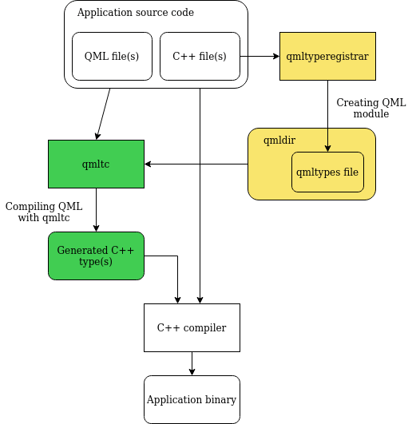

QML type compiler
The QML type compiler, qmltc, is a tool shipped with Qt to translate QML types into C++ types that are ahead-of-time compiled as part of the user code. Using qmltc can lead to better run-time performance due to more optimization opportunities available to the compiler compared to a QQmlComponent-based object creation. The qmltc is part of the Qt Quick Compiler toolchain.
By design, qmltc outputs user-facing code. That code is supposed to be utilized by the C++ application directly, otherwise you won't see any benefit. This generated code essentially replaces QQmlComponent and its APIs to create objects from QML documents. You can find more information under Using qmltc in a QML application and Generated Output Basics.
In order to enable qmltc:
- Create a proper QML module for your application.
- Invoke qmltc, for example, through the CMake API.
#includethe generated header file(s) in the application source code.- Instantiate an object of the generated type.
In this workflow qmltc usually runs during the build process. Thus, when qmltc rejects a QML document (whether due to errors or warnings, or because of constructs qmltc doesn't yet support), the build process will fail. This is similar to how you receive qmllint errors when you enable the automatic generation of linting targets during QML module creation and then attempt to "build" them to run the qmllint.
Warning: qmltc is currently in a Tech Preview stage and might not compile an arbitrary QML program (see Known Limitations for more details). When qmltc fails, nothing is generated as your application cannot sensibly use the qmltc output. If your program contains errors (or unsolvable warnings), they should be fixed to enable the compilation. The general rule is to adhere to the best practices and follow qmllint advice.
Note: qmltc does not guarantee that the generated C++ stays API-, source- or binary-compatible between past or future versions, even patch versions. Furthermore, qmltc-compiled apps using Qt's QML modules will require linking against private Qt API. This is because Qt's QML modules do not usually provide a public C++ API since their primary usage is through QML.
Using qmltc in a QML application
From the build system perspective, adding qmltc compilation is not much different from adding qml cache generation. Naively, the build process could be described as:

While the real compilation process is much trickier, this diagram captures the core components that qmltc uses: the QML files themselves and qmldir with qmltypes information. Simpler applications typically have rather primitive qmldir yet, in general, qmldir could be complex, providing essential, nicely packed type information that qmltc relies on to perform correct QML-to-C++ translation.
Nevertheless, adding an extra build step is not enough in qmltc case. The application code must also be modified to use qmltc-generated classes instead of QQmlComponent or its higher-level alternatives.
Compiling QML code with qmltc
Qt, starting from Qt 6, uses CMake to build its various components. User projects can - and are encouraged to - also use CMake to build their components using Qt. Adding out-of-the-box qmltc compilation support to your project would require a CMake-driven build flow as well since this flow is centered around proper QML modules and their infrastructure.
The easy way to add qmltc compilation is by using the dedicated CMake API as part of a QML module creation for the application. Consider a simple application directory structure:
. ├── CMakeLists.txt ├── myspecialtype.h // C++ type exposed to QML ├── myspecialtype.cpp ├── myApp.qml // main QML page ├── MyButton.qml // custom UI button ├── MySlider.qml // custom UI slider └── main.cpp // main C++ application file
Then the CMake code would usually look similar to the following:
# Use "my_qmltc_example" as an application name:
set(application_name my_qmltc_example)
# Create a CMake target, add C++ source files, link libraries, etc...
# Specify a list of QML files to be compiled:
set(application_qml_files
myApp.qml
MyButton.qml
MySlider.qml
)
# Make the application into a proper QML module:
qt6_add_qml_module(${application_name}
URI QmltcExample
QML_FILES ${application_qml_files}
# Compile qml files (listed in QML_FILES) to C++ using qmltc and add these
# files to the application binary:
ENABLE_TYPE_COMPILER
)
# (qmltc-specific) Link *private* libraries that correspond to QML modules:
target_link_libraries(${application_name} PRIVATE Qt::QmlPrivate Qt::QuickPrivate)
Using the Generated C++
Unlike in the case of QQmlComponent instantiation, the output of qmltc, being C++ code, is used directly by the application. Generally, constructing a new object in C++ is equivalent to creating a new object through QQmlComponent::create(). Once created, the object could be manipulated from C++ or, for example, combined with QQuickWindow to be drawn on screen. Given a myApp.qml file, the application code (in both cases) would typically look like this:
Using QQmlComponent
#include <QtQml/qqmlcomponent.h> QGuiApplication app(argc, argv); app.setApplicationDisplayName(QStringLiteral("This example is powered by QQmlComponent :(")); QQmlEngine e; QQuickWindow window; QQmlComponent component(&e); component.loadUrl( QUrl(QStringLiteral("qrc:/qt/qml/QmltcExample/myApp.qml"))); QScopedPointer<QObject> documentRoot(component.create()); QQuickItem *documentRootItem = qobject_cast<QQuickItem *>(documentRoot.get()); documentRootItem->setParentItem(window.contentItem()); window.setHeight(documentRootItem->height()); window.setWidth(documentRootItem->width()); // ... window.show(); app.exec();
Using qmltc-generated class
#include "myapp.h" // include generated C++ header QGuiApplication app(argc, argv); app.setApplicationDisplayName(QStringLiteral("This example is powered by qmltc!")); QQmlEngine e; QQuickWindow window; QScopedPointer<QmltcExample::myApp> documentRoot(new QmltcExample::myApp(&e)); documentRoot->setParentItem(window.contentItem()); window.setHeight(documentRoot->height()); window.setWidth(documentRoot->width()); // ... window.show(); app.exec();
QML engine
The generated code uses QQmlEngine to interact with dynamic parts of a QML document - mainly the JavaScript code. For this to work, no special arrangements are needed. Any QQmlEngine instance passed to the constructor of a qmltc-generated class object should work correctly as does QQmlComponent(engine). This also means that you can use QQmlEngine methods that affect QML behavior. However, there are caveats. Unlike QQmlComponent-based object creation, qmltc itself does not rely on QQmlEngine when compiling the code to C++. For instance, QQmlEngine::addImportPath("/foo/bar/") - normally resulting in an additional import path to scan for - would be completely ignored by the ahead-of-time qmltc procedure.
Note: To add import paths to the qmltc compilation, consider using a relevant argument of the CMake command instead.
Generally, you can think of it this way: QQmlEngine involves the application process to run, while qmltc does not as it operates before your application is even compiled. Since qmltc makes no attempt to introspect your application's C++ source code, there is no way for it to know about certain kinds of QML manipulations you, as a user, do. Instead of using QQmlEngine and related run-time routines to expose types to QML, adding import paths, etc. you are, practically, required to create well-behaving QML modules and use declarative QML type registration.
Warning: Despite qmltc working closely with QQmlEngine and creating C++ code, the generated classes cannot be further exposed to QML and used through QQmlComponent.
Generated Output Basics
qmltc aims to be compatible with the existing QML execution model. This implies that the generated code is roughly equivalent to the internal QQmlComponent setup logic and thus you should be able to understand your QML type's behavior, semantics and API the same way you do currently - by visually inspecting the corresponding QML document.
However, the generated code is still somewhat confusing, especially given that your application should use the qmltc output on the C++ side directly. There are two parts of the generated code: CMake build files structure and the generated C++ format. The former is covered in the CMake API of qmltc and the latter is covered here.
Consider a simple HelloWorld type, that has a hello property, a function to print that property, and a signal emitted when the object of that type is created:
// HelloWorld.qml import QtQml QtObject { id: me property string hello: "Hello, qmltc!" function printHello(prefix: string, suffix: string) { console.log(prefix + me.hello + suffix); } signal created() Component.onCompleted: me.created(); }
When providing a C++ alternative of this QML type, the C++ class would need a QML-specific meta-object system macro, Q_PROPERTY decoration for the hello property, Q_INVOKABLE C++ printing function and a regular Qt signal definition. Similarly, qmltc would translate the given HelloWorld type into roughly the following:
class HelloWorld : public QObject { Q_OBJECT QML_ELEMENT Q_PROPERTY(QString hello WRITE setHello READ hello BINDABLE bindableHello) public: HelloWorld(QQmlEngine* engine, QObject* parent = nullptr); Q_SIGNALS: void created(); public: void setHello(const QString& hello_); QString hello(); QBindable<QString> bindableHello(); Q_INVOKABLE void printHello(passByConstRefOrValue<QString> prefix, passByConstRefOrValue<QString> suffix); // ... };
Even though specific details of the generated type could differ, the universal aspects remain. For instance:
- QML types within a document are translated into C++ types, according to the compiler-visible information.
- Properties are translated into C++ properties with Q_PROPERTY declarations.
- JavaScript functions become
Q_INVOKABLEC++ functions. - QML signals are transformed into C++ Qt signals.
- QML enumerations are converted into C++ enumerations with
Q_ENUMdeclarations.
An additional detail is the way qmltc generates class names. A class name for a given QML type is automatically deduced from the QML document defining that type: the QML file name without extensions (up to and excluding the first ., also known as the base name) becomes a class name. The file name case is preserved. Thus, HelloWorld.qml would result in a class HelloWorld and helloWoRlD.qml in a class helloWoRlD. Following the QML convention, if a QML document file name starts with a lower-case letter, the generated C++ class is assumed to be anonymous and marked with QML_ANONYMOUS.
For now, although the generated code is ready to be used from the C++ application side, you should generally limit calls to the generated APIs. Instead, prefer implementing the application logic in QML/JavaScript and hand-written C++ types exposed to QML, using the qmltc-created classes for simple object instantiation. While generated C++ gives you direct (and usually faster) access to QML-defined elements of the type, understanding such code could be a challenge.
Known Limitations
Despite covering many common QML features, qmltc is still in the early stage of development with some things yet to be supported.
Imported QML modules that consist of QML-defined types (such as QtQuick.Controls) might not get compiled correctly, even if those QML-defined types were compiled by qmltc.. At present, you can reliably use QtQml and QtQuick modules as well as any other QML module that only contains C++ classes exposed to QML.
On top of this, there are some more fundamental peculiarities to consider:
- Qt's QML modules usually rely on C++ libraries to do the heavy lifting. Often enough, these libraries do not provide public C++ API (since their primary usage is through QML). For the users of qmltc, this means that their apps need to link against private Qt libraries.
- Due to the nature of qmltc code generation, QML plugins are unusable for compilation purposes. Instead, QML modules - that use a plugin - have to ensure that the plugin data is accessible at compile time. Such QML modules would then have optional plugins. In most cases, the compile-time information can be provided through a header file (with C++ declarations) and linkable library (with C++ definitions). The user code is responsible (usually through CMake) for including a path to the header file and linking against the QML module library.
Note: Given the tech preview status of the compiler, you might also encounter bugs in qmltc, in the generated code, or some other related part. We encourage you to submit a bug report in this case.